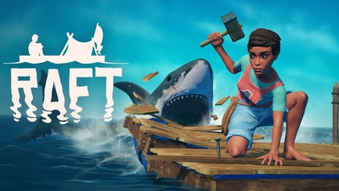
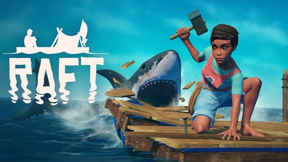

About Me
In addition, I'd want to express my gratitude to my beloved lecturer, Madam Razifah Othman. I understand how difficult it is for both of us during the pandemic, but with your thoughtfulness of postponing the submission deadline, I am able to complete this project on time. I also want to apologize to Madam Razifah Othman for the late delivery of my project. Also, I'd want to thank all of my friends who assisted me in finishing this project by encouraging and instructing me in depth about coding.
Wanna know about me? ♥
I am born in Hospital Seremban on 29th November 2000, and i currently lived at Garden Homes, Seremban 2. I have 12 siblings that are still in this world and some of the are married and already have at least 3 children which makes the family even bigger.I am already in my final semester study at UiTM Kampus Rembau and i am currently undertaking Diploma in Information Management. It's a really exciting experience because I get to learn a lot of new things that will perhaps help me with life and i also got to meet with new friends when I'm studying at Campus Rembau.
Books read
My Books
There are some different types of books that i like to read during my university life. the type that i was talking about is a Webnovel which is similar to normal malay books but only that it is published online hence the name webnovel. At first i don't really like webnovel very much mainly because it is compromise of fully english words as i usually read malay horror books. When i started reading webnovel there are many new and bizarre words that are not usually seen and that usually prompt me to search for the meaning of the words. After i have start reading the books i really enjoys the various genre that is offered by webnovel and although there are some not good genre most of them are enjoyable to read. Sometime i even imagined myself as one of the characters which increased my immersion towards the books. Unsuprisingly, despite the saying that books are good for health i noticed i started to put up weight and my health is deteriorating. as the saying goes too much good things without supervision usually leads to poisoning.
After i started reading webnovel i started reading various malay books that i usually feel bored when reading it in the past, i use the technique that i use when reading webnovel and that is immersion and it suprisingly helps a lot for me. Here are some pictures that I would like to show you about the books that i read after i start reading the webnovel.
Webnovel
Buku Melayu
Favourite Music
The video that you can see above is my new favourite music during this time by Bruno Mars "Leave The Door Open". As you can hear the song are really chill and his voice really give me goosebumps sometimes because it's really unique and wonderful. I like him since my primary year and until now he never fail to make me feel happy.
This one is my favourite underground rapper artist from Malaysia which goes by Ical Mosh, and his song 'Kunci'. His song really hits me hard because it makes me realize that i feel that my life is caged. This is just one of my personal favourite ♥
Games

 

That's all about me, and before you guys click the "X", let's take a look at my family when we all managed to get together. I really wanna appreciate my family because of how much help they have been in my life♥